Hiring a videographer can feel overwhelming. Will the video be worth the investment? Will the message and the way it looks match what you had in mind?
We're Katy and Eugene two videographers offering video production in Portugal. We bring together careful strategy, beautiful visuals with a stress free process and storytelling. So your video reaches the right people and grows your business, whether you're based in Lisbon, Coimbra, or elsewhere in Portugal.
We have over 8+ years experience and clients who keep coming back. We love working with small businesses and grass roots organizations, but our work has also been featured by larger clients such as CNBC and Michelle Obama.
What about revisions and being in front of the camera? Will the message and the way it looks match what you had in mind? These are all normal worries and we get it!
“Katy guided me through deciding what to include and creating a script, and made me feel as relaxed as possible during the filming. The results are fantastic, just what I was looking for.” — Flora Collingwood-Norris, Collingwood-Norris
Our videographer services get real results, here’s how we make it happen..
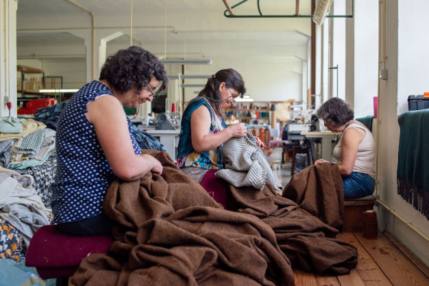
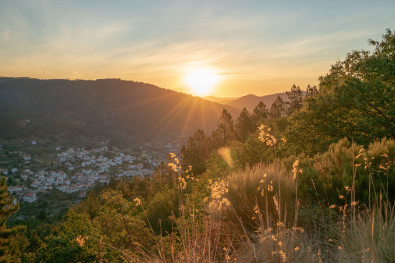
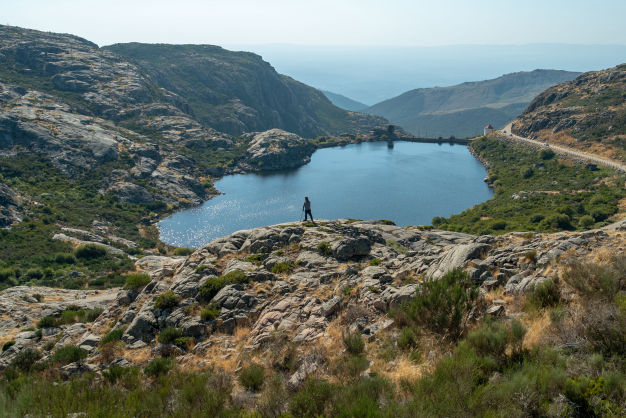
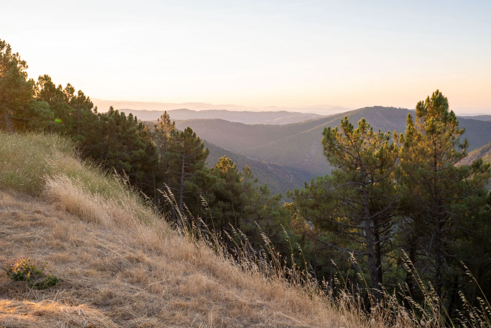
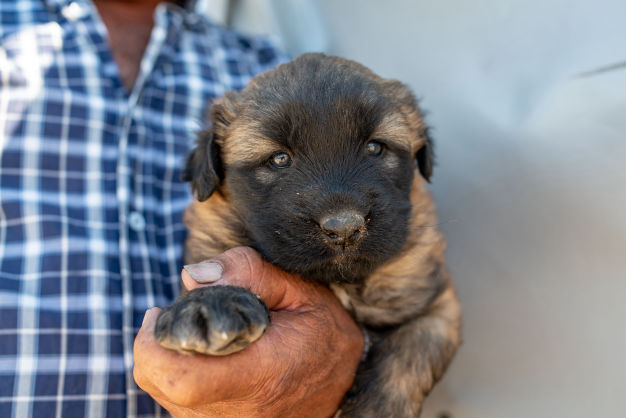
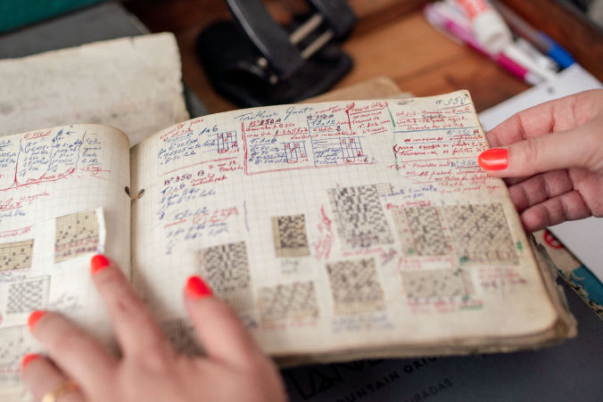
1. Videos That Get Results
We help turn your customers’ challenges into action that grows your business. Before we even pick up a camera, we spend time researching your audience and the benefits of your product or service.
We combine research, story, interview questions, and shot lists into a clear plan. After filming and editing, you’ll receive your finished video(s) plus simple tips on how to share them and get the best results.
“The finished product was just what we had in mind and we continue to receive only positive feedback on it.”
— Paul Tickner, Kusini Safaris
As a trusted videographer Portugal, we plan every video to get results, while keeping the process easy and enjoyable from start to finish.
2. Easy and Stress-Free Process
We make sure you feel relaxed on camera, so there’s no awkwardness or stress. Behind the scenes, we handle all the details. Planning the structure, organizing interview questions, creating shot lists, and taking care of logistics, so you can focus on being yourself. During editing, we keep you in the loop with clear communication, making feedback easy. Always delivered on time, ready for social media, websites, or presentations.
“Professional but also very easygoing and importantly was able to help me to feel relaxed during filming.”
— Sarah Rueger, Amaranthine Skincare
As a videographer in Portugal, we create a relaxed environment where your stories can shine and here’s why that makes all the difference.
3. Story-Driven Videography That People Remember
From hunter-gatherers to today, humans have taught lessons and connected through stories, something facts alone can't do. By following a simple story arc, we highlight the ups and downs, repeat the key ideas your audience needs to remember, and include personal moments that feel real, not generic. It works. Our videos have made people laugh, cry, and remember the people and places we capture through storytelling.
“Katy and Eugene completely blew our minds with the work they produced, goose bumps and wet eyes all round PB World!”
— Claire Wouters, Pic's Peanut Butter
As a videographer Portugal, we make sure every frame tells the story. The secret to this is...
4. High-Quality Video That Looks and Sounds Beautiful
We treat every video like building a little world that’s yours. Colours, lighting, framing, sound, and the smallest details are all chosen to tell your story clearly and beautifully. Think of it as a documentary mixed with a commercial. Real moments, but making sure everything looks good, tells your story clearly, and feels like your brand.
“The footage is the best we have seen from our schools, the colors, images, shots, everything. Katy found a compelling story and captured it beautifully.”
— Reshma Patel, Impact Network
Strategy, storytelling, beautiful visuals, stress-free filming, that’s what our videographer Portugal services deliver to help your business grow.
Want to find out how it all comes together?
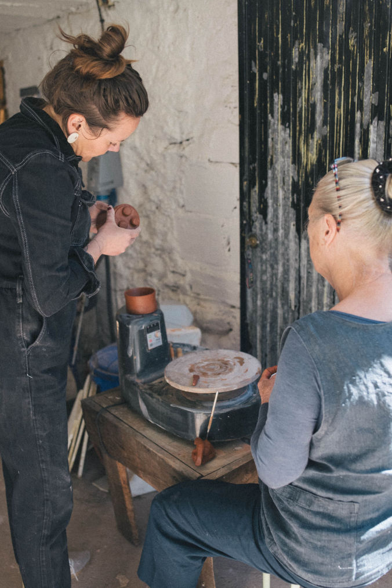
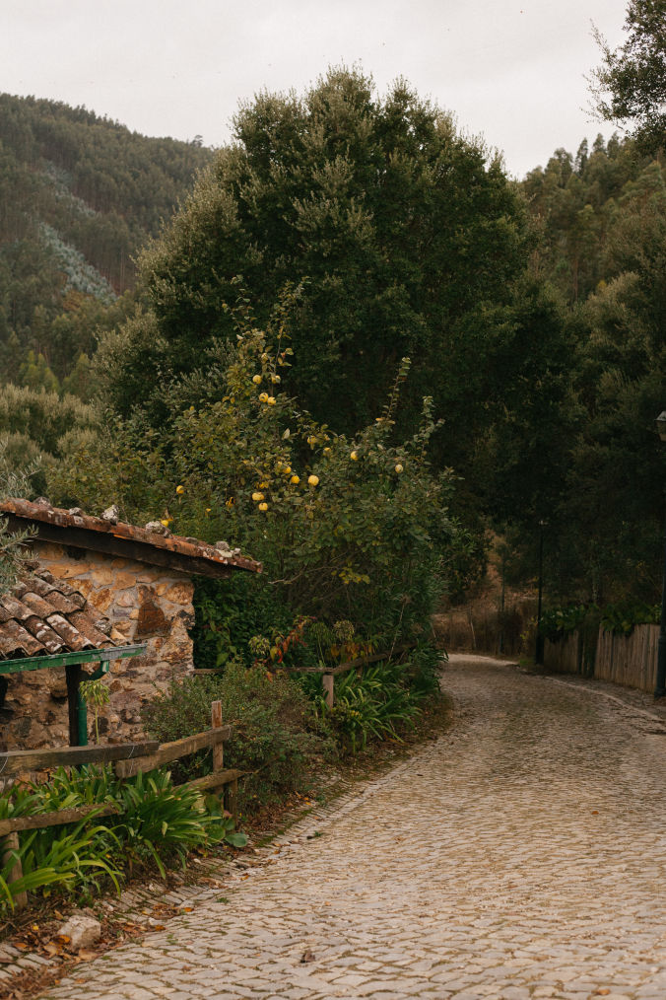
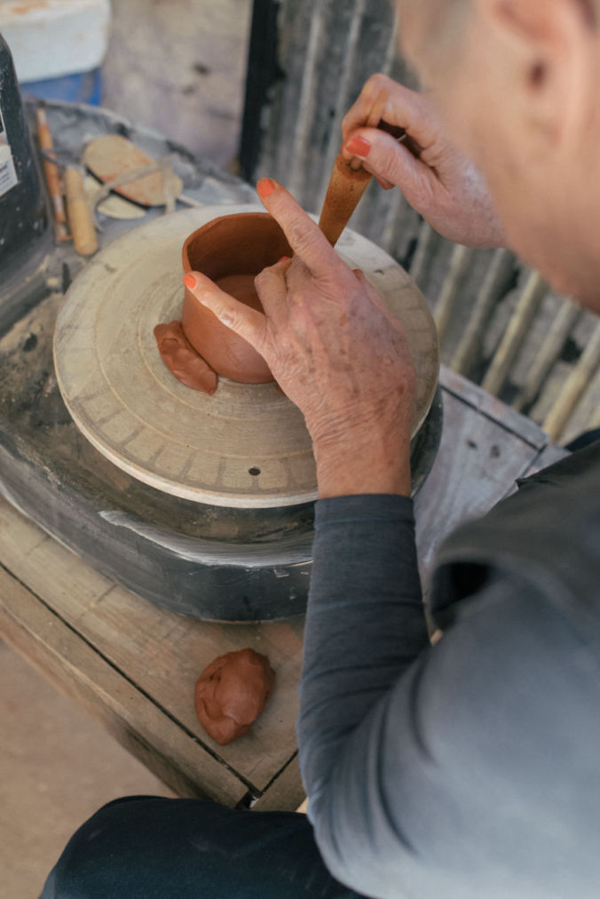
Product - Find out exactly what you're selling and how it helps people.
Audience - Research who we are making this video for and what problems they're facing.
Stories - We listen to your stories, the highs, the lows, the little details.
Structure - Give your video a clear shape, create interview questions and shot lists.
Film and Audio - Filming time! Throughout the video production process we carefully consider colour, light, framing and sound that build the world your audience can step into.
Edit - Pick the very best moments, follow the story arc, cut, cut, cut, and add music and audio.
Send - You’ll get your finished video or videos, plus info on how and where to use them.
If you’re looking for a videographer in Portugal who clarifies your goals, brings your vision to life, and delivers results, we’d love to help! With 8+ years of experience, we’ve worked with many clients who come back again and again. With our experience in storytelling, production, and strategy, we guide every project, while keeping the process relaxed.
“Working with you two was just about the easiest collaborative process I could have ever imagined. You were incredibly relaxed… and professional. I look forward to continuing to work with Munjiri Videos as the school continues to grow.”
— Olivia Fite, Collective Wonder Herb School
“We absolutely loved working with Katy and Eugene…We would highly recommend them and will definitely work with them again.”
— Julie Hadley, The Heartfelt Project
We only take on a handful of projects at a time, so you get our full attention. If this approach feels right for you, you can message me here, with any questions.
katy@munjiri.com
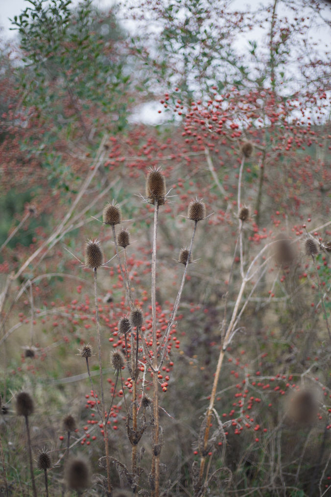
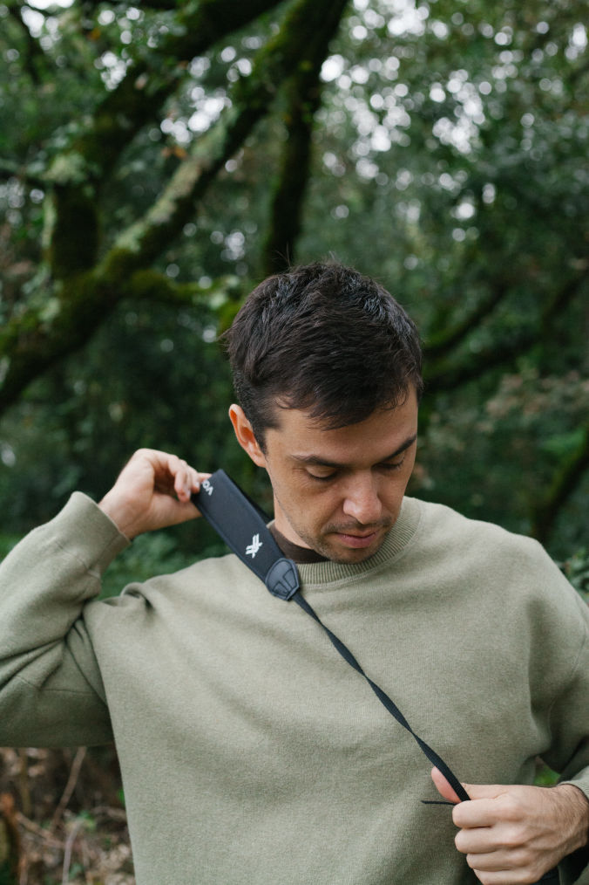
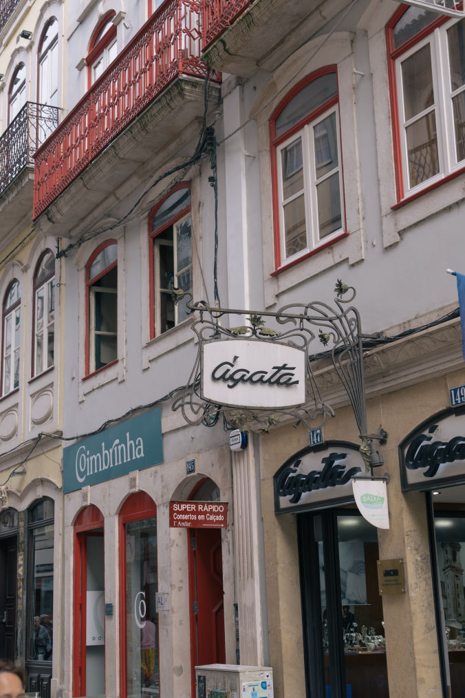
We’ve captured stories across the country, from Lisbon to Serra da Estrela, including...
Lisbon & Sintra – Capturing music videos and social media content on the streets of Lisbon and in the historic corners of Sintra.
Porto & Northern Portugal – Showcasing properties and commercial spaces, highlighting architecture and riverside views across northern Portugal.
Central Portugal & Serra da Estrela – Collaborating with artisan brands in the mountains of Serra da Estrela and documenting a herb school in the oak forest near Coimbra.
Algarve & Alentejo – Producing a nature and travel documentary capturing wildlife, wetlands, and the beautiful countryside.
Across all these projects, our work brings stories to life with high-quality visuals and sound, no matter where we’re filming.
Explore our portfolio to see more of our work.